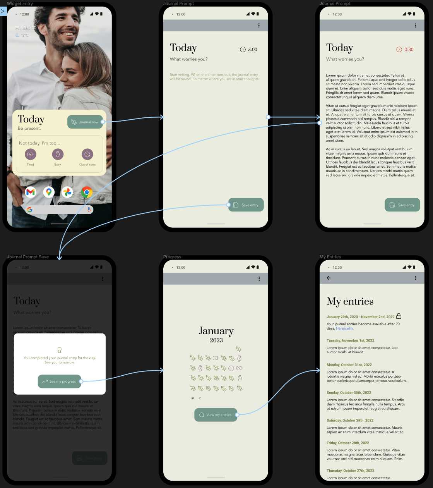

I stumbled upon several cognitive biases and made some poor decisions about what I needed to do next for my startup project in the past two weeks. I’ll share what happened and how you (and I) can avoid the pitfalls.
What did I do?
I’ve wanted to work on accessible means of self-care, so I prioritized talking to people to better understand what I needed to solve. I reached out to my penpals and asked what they do for self-care; 19 people responded, and all of them mentioned journaling as a means of self-care.
I couldn’t stop thinking about what kind of journaling app I will build after that.
I brainstormed reasons why someone would want to have my journaling app over another. From this exercise, I produced a list of what my users will receive by using my journal.
- Make peace with my inner voice by letting me express my thoughts and feelings without the pressure or judgment.
- Help me build emotional resilience by embracing vulnerability; labeling my fear, worry, and anxiety; and making small changes to handle them.
- Allow myself to feel more hopeful, connected, and grateful by taking the time to recognize the small moments of joy and positive energy, no matter how trivial they may seem.
From there on, I did a user journey exercise to see what kind of experience I should initially build. I turned the user journey flow into a low-fidelity sketch. Then I turned the low-fidelity into a high-fidelity one in Figma.

To ensure that I’m headed in the right direction, I sent out the prototype flow to get feedback. I’ve received positive responses, and started looking into a no-code/low-code solution so I can launch an MVP for validation. Some people told me that they prefer pen and paper, but I’m assumed they weren’t my target customer.
How many cognitive biases did I fall prey to?
I instantly latched onto my idea after a single question.
- Anchoring is the tendency to rely too heavily on the first piece of information encountered when making a decision. I gravitated to the first pattern I was able to discern and made my decision on what to build.
- Availability heuristic is the tendency to base decisions on the most recent information without being relying on a comprehensive analysis of all available information. I asked one question: “how do you self-care?” Despite receiving numerous other ways that people listed for self-caring, I chose to ignore all of them and only look at journaling as a viable means.
I got a way too invested in the idea and started doing a lot of work.
- Escalation of commitment is the tendency to invest more resource, time, or energy in a decision though nothing is indicating that you should. What I really got from my conversation is that people who write letters to me also like to write in a journal. Instead, I took it as some sort of sign and really ran with it.
- Overconfidence effect is the tendency to have excessive confidence in one’s own answers to questions. All the brainstorming and flowcharting exercises I did were solo activities. I posed the questions, and I answered them. I was satisfied I was on the right track, and kept pushing forward.
I carried on with people who reacted positively to my prototype and dismissed the others.
- Confirmation bias is the tendency to seek out and interpret information that confirms your beliefs while disregarding the contraction. It’s a classic; what more can I say?
How to avoid cognitive biases
Create checkpoints
Before you continue down a rabbit hole and further invest what precious time you’ve got, create frequent checkpoints. A checkpoint should include the following:
- Listing assumptions you’re making with where you are and where you’re going.
- Coming up with questions that can validate your assumptions to be true or false.
- Reaching out to diverse perspectives and asking them questions for validation purposes.
- Based on the responses, evaluating what steps to take next.
Just like in video games, this helps make meaningful progress and it makes turning back to a last, good save easier (before you got absolutely ambushed because you killed too many cows for profit).
Check your ego and don’t take things personally
When I was doing this discovery work as my job, I took all the feedback in stride. But because I got so rapidly hooked on the idea and I felt like I had the momentum and I had all this flurry of activity to show what I’ve done, I got very emotionally attached to what I produced. Here’s what I did:
- I stepped away from the mess I made for a few days so that I can be more detached from the situation in order to better observe and evaluate what happened.
- I reframed the situation in order to learn from the experience. Instead of feeling hurt by people who weren’t raving about my idea or feeling embarrassed that I derailed two weeks on this, I decided that it was a good learning experience I can write about so I can help others avoid the same mistake.
- I kept reminding myself failure is okay and expected. I agree it’s not the sexiest words of affirmation. But a consistent, stern, sobering self-reminder that I’ll fail more than get it right has been helpful to keep my ego in check.
Stop being a doer
“If you build it, they will come” is a disastrous trap. I didn’t use Google+ or Google Lively, and I won’t go to a meeting in the Metaverse. According to the Bureau of Labor Statistics, as of March 2022, only about 80% of businesses survived after one year. So why do so many businesses fail?
The answer is simple: it’s because businesses were selling something that not many people wanted. So stop being so eager to build a solution.
You may think, “But I need to go fast. And what about the first-mover advantage? I need to launch my idea ASAP!” The first-mover advantage is an advantage gained by first introducing a novel product or service to the market. Examples include Gillette, Amazon and eBay. And Vine, MySpace, and AltaVista. While the first-mover advantage may create a sense of false urgency to “just build it,” this advantage means nothing if no one is interested in what you have to sell.
Instead, find out if people want it built first. Then they might come.